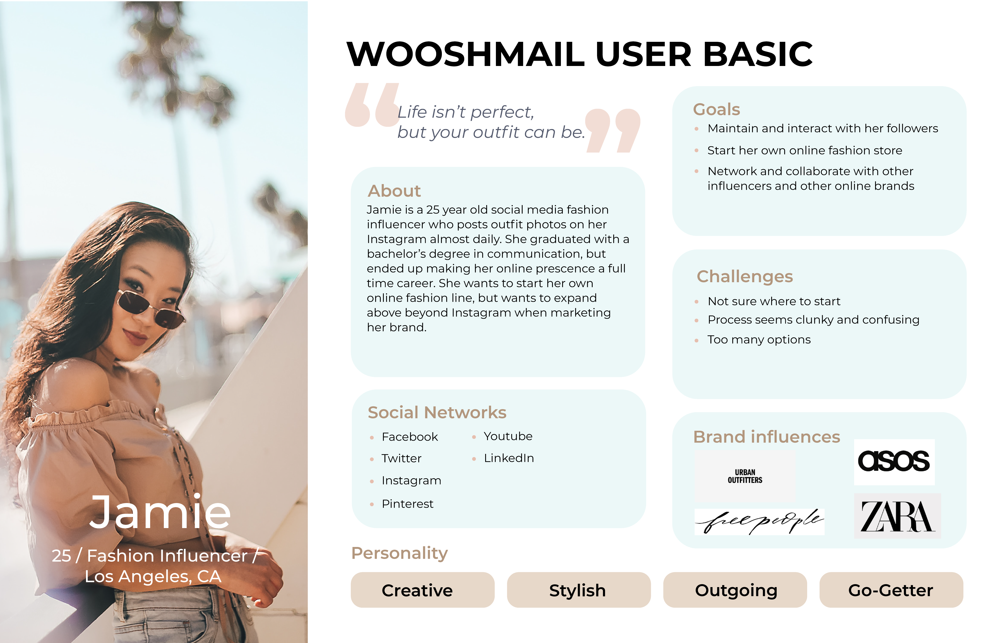
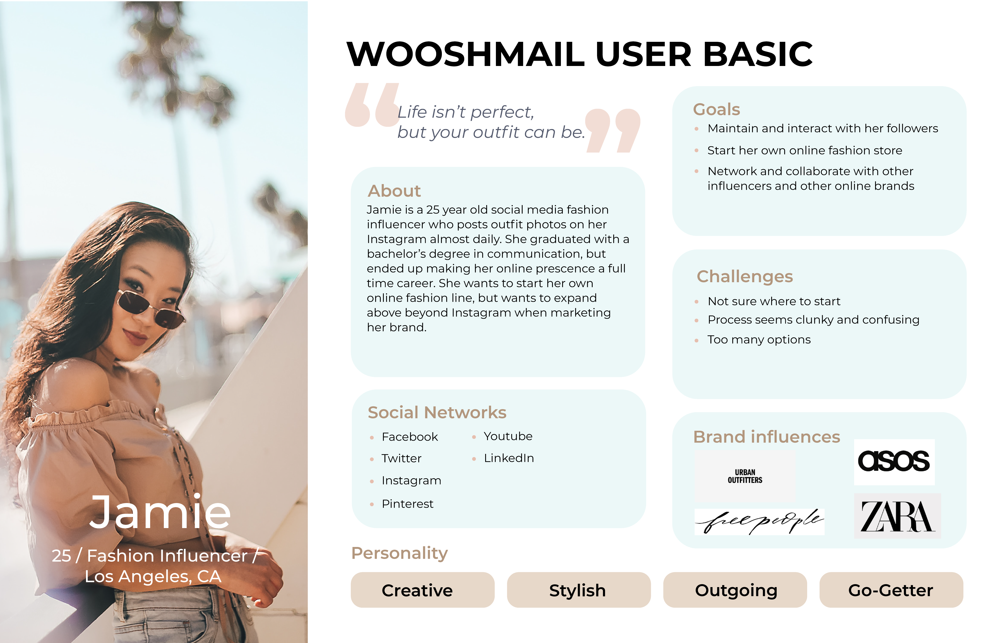

Admittedly, this project was difficult for me to understand in the beginning, as I have never used a B2B email marketing website.
However, I was able to take advantage of it by looking at the problem from the perspective of users trying to use a site like this for the first time.
I used this to try to confirm my understanding of the problem and design user flows that would work well for both new and experienced users.
As a result of this project, I feel like I am more understanding of how to design for a B2B client and how campaign sites like these work, and how to design for two different types of users for the same site.
Future Improvements
Next time, I would definitely try to do better research on email marketing websites,
even go as far as making accounts on these sites to get a better understanding of how they work so that I could gain more confidence and confirmation in my designs.
I would also make the differences between admin and basic sites more apparent, as both sites look similar if not almost the same.
Regarding user testing, I would create more specific and targeted questions to ask my users as they test, so that I know where exactly to revisit or make changes to.
With the mockup designs, I would take the time to try various color palettes to see what looks and fits best with the site, since I feel that there is quite a bit of white space on the template gallery page.
And finally, if I had more time, I would create mockups for more pages to make the site look more cohesive.
 
